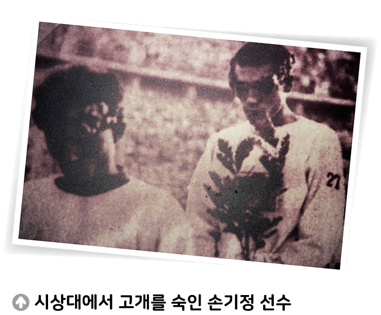

자료 읽기만일 나라에 주권이 없다면

1936년 8월 9일, 올림픽의 꽃 마라톤 경기가 열리는 날이었다. 그날 주경기장에 가장 먼저 들어온 손기정 선수의 기록은 2시간 29분 19초, 올림픽 신기록이다. 심지어 동양인 최초 올림픽 우승이다. 동메달은 함께 출전한 남승룡 선수가 차지하였다. 경기가 끝나고 축하받고 기뻐해야 하는 그 시상식에 일장기가 달린 유니폼을 입은 두 선수가 고개를 숙였다. 두 선수는 1912년 일본에 국권을 빼앗긴 이후에 태어나 태극기를 본 적도 애국가를 들어 본 적도 없었다. 국기도 애국 가도 없이, 일장기가 걸린 시상대에 선 그들의 심정이 어땠을까.
- SBS, 「SBS 뉴스」, 2023. 7. 14.
● 손기정 선수는 시상대에서 어떤 심정이었을까? 만일 나라에 주권이 없다면 나는 어떻게 살아갈지 생각해 보자.
손기정 선수는 시상대에서 착잡한 심정이었을 것 같다. 조국이 아닌 다른 나라 선수로 뛰어야 했기 때문이다. 만일 나라에 주권이 없다면, 나는 그저 하루 하루 생계를 유지하며 무기력하게 생활할 것 같다.